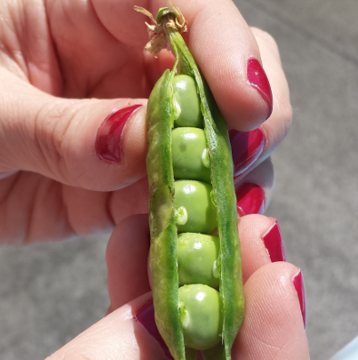

Zucchine
Coltivare in terreno molto ricco di materia organica e non coltivare dopo Solnacce o piante della stessa famiglia delle cucurbitacee.
- Varietà: Zucchina chiara di Faenza
- Periodo di Semina: Marzo / Aprile
- Primo raccolto: Fine Aprile
- Ultimo raccolto: Fine Luglio
- Raccolto:
Dimensione Quantità Piccole (10cm) 16 Medie (11-16cm) 26 Grandi (>16cm) 9 51
Piselli

American Wonder: Varietà media precoce come ciclo colturale.
Consigli
- Piantare in semenzaio riscaldato.
E' importante:- Acquistare vasetti biodegradabili (di cocco o cartone)
- Mantenere arcato il semenzaio per evitare muffe
- Non usare il coperchio del semenzaio
- Non mettere il semenzaio vicino al termosifone
- Fissare i sostegni nel terreno non appena le piantine raggiungono i 10cm
- Acquistare una rete con spazi di non più di 10cm per garantire i sostegni adeguati